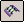

Stitch a surface
-
On the Surfacing toolbar, click the Stitched Surface button

. -
Select two or more surfaces to stitch together.
-
Click the Accept (check mark) button on the command bar to accept the surfaces to stitch.
-
Click Finish.
-
You can drag a fence to select all the surfaces in the document.
-
You can set the stitched surface options for tolerance and surface healing on the Stitched Surface Options dialog box.
-
If a single Stitch feature cannot be created, a message is displayed that allows you to specify whether you want to create multiple Stitch features, or cancel the operation.
-
To remove surfaces from the select set, select the surfaces while pressing the Shift key.
-
To delete the link between the stitched surface feature and its parents, use the Drop Parents command on the shortcut menu. This command reduces the amount of data in the file. Once you drop the parent information, the stitch surface feature can no longer be edited.
-
You can use the commands on the shortcut menu to display, hide, edit, rename, or recompute the stitched surfaces.
-
If the output forms a closed volume, a solid body will be created. Otherwise, the stitch surface will be a sheet body with free edges that can be stitched to other surfaces.
-
If the stitched surfaces result in a solid body and there is no base feature in the file, the Make Base Feature command becomes available on the shortcut menu, and you can make the stitched body the base feature for the part.